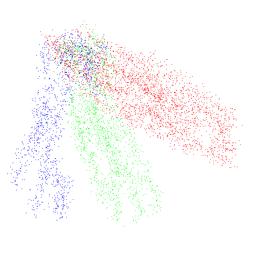

Color Conjuring
I don't know how to color or choose colors, carefully planning ahead what palette to use! In the past, by lack of better judgement and being a total beginner, I either chose the most vivid or the closest color for what I thought I wanted and got stuck with it and only changed them by using burn/dodge which is usually not the most accurate and best approach to shading. I often ended up with muddy and dirty, inconsisitent colors.
Of course if one doesn't use a prepared palette, then colors can be inconsistent when the original base color get lost in time. I don't do palettes. Why? Because I don't work like that. I prefer to go by heart, storing all the references in my head. I'm also lazy and I like to not follow standard practices. So what was the solution to fix my color theory?
AI...
Well, not up-close. We don't do AI here. However, it didn't stop me from thinking about how it did the thing it was made to do. In a sense, I wanted to paint like AI at that moment. So I fired up my favourite painting software (GIMP) and started to work on some random stuff, utilising every tool I thought would make me achive the look, for example, using Heal Tool to copy random edges, corners, bumps to add little details to other places and also to fine blend to make very smooth surfaces and melt things together.
GIMP lets you operate on RGB channels separately by activating/deactivating them. That allowed me to add chromatic abberation with Warp tool by offsetting the channels in places I wanted. That added a bit of realism to the painting the way it was mixed and also it became a method for adding subsurface scattering effect by slightly offsetting the Red channel.
Anyways, that's how color conjuring born. Thanks to mocking AI, I discovered that I can use various tools to operate on isolated color channels in GIMP which are by themselves are greyscale so I thought I could use the dodge/burn tool to paint and it worked!
From there on, I could put whatever color on the canvas or just start with pure black background and using the channels one by one with burn/dodge I could conjure up whatever color or bend existing colors towards a certain hue, value right there on the canvas using the surrounding colors as reference. This is basically what color conjuring is all about.
In the last 4 years (it's 2024) I spent messing around with different color conjuring methods to make color theory more accessible for a lazy and dumb person like myself. I don't know if these methods also do the same favour to other people because in my time of researching them, I inevitably learned a thing or few.
I have to say, I'm a destructive artist when it comes to painting. I used to say "If AI can paint on one layer so can I". I'm also heavily inspired by 3d/rendering engines so my domain is the world of lineless and realism. I'm also a mouse user so lineart is obviously not the part of my workflow, unless I start working on making it accessible to myself. Nevertheless, color conjuring is something I will keep using forever probably.
Of course if one doesn't use a prepared palette, then colors can be inconsistent when the original base color get lost in time. I don't do palettes. Why? Because I don't work like that. I prefer to go by heart, storing all the references in my head. I'm also lazy and I like to not follow standard practices. So what was the solution to fix my color theory?
AI...
Well, not up-close. We don't do AI here. However, it didn't stop me from thinking about how it did the thing it was made to do. In a sense, I wanted to paint like AI at that moment. So I fired up my favourite painting software (GIMP) and started to work on some random stuff, utilising every tool I thought would make me achive the look, for example, using Heal Tool to copy random edges, corners, bumps to add little details to other places and also to fine blend to make very smooth surfaces and melt things together.
GIMP lets you operate on RGB channels separately by activating/deactivating them. That allowed me to add chromatic abberation with Warp tool by offsetting the channels in places I wanted. That added a bit of realism to the painting the way it was mixed and also it became a method for adding subsurface scattering effect by slightly offsetting the Red channel.
Anyways, that's how color conjuring born. Thanks to mocking AI, I discovered that I can use various tools to operate on isolated color channels in GIMP which are by themselves are greyscale so I thought I could use the dodge/burn tool to paint and it worked!
From there on, I could put whatever color on the canvas or just start with pure black background and using the channels one by one with burn/dodge I could conjure up whatever color or bend existing colors towards a certain hue, value right there on the canvas using the surrounding colors as reference. This is basically what color conjuring is all about.
In the last 4 years (it's 2024) I spent messing around with different color conjuring methods to make color theory more accessible for a lazy and dumb person like myself. I don't know if these methods also do the same favour to other people because in my time of researching them, I inevitably learned a thing or few.
I have to say, I'm a destructive artist when it comes to painting. I used to say "If AI can paint on one layer so can I". I'm also heavily inspired by 3d/rendering engines so my domain is the world of lineless and realism. I'm also a mouse user so lineart is obviously not the part of my workflow, unless I start working on making it accessible to myself. Nevertheless, color conjuring is something I will keep using forever probably.
Internal Mixing:
Basic stuff everyone is familar with... You can basically color conjure with this if you colorpick and adjust the sliders towards something but it's slower. We want the fastest and the best method!
Color is achieved by mixing Red, Green, Blue values internally and used as-is from the Foreground/Background (FG/BG) slot or dialog.
This is the most common method of color mixing and can be adjusted by different color spaces/models.
This is the most common method of color mixing and can be adjusted by different color spaces/models.
Color Conjuring:
Making coloring accessible!! Yay!
You can use whatever color honestly, the core of this method is the use of Addition mode with a low value. Addition adds values to the 3 main color channels so every stroke/stamp will become brighter and brighter. I use Red, Green, Blue, Cyan, Magenta, Yellow, Black and White to conjure because these colors are the 3 main colors and then their direct opposites. Opposites are used to substract from the main 3, but these days I don't use Substract mode to do that, instead I use Grain Merge because it gives a more expected result.
In GIMP there are two sub-modes for most of the blending modes which are normal and legacy. Normal can be used for blocking out a scene or object on a transparent canvas, while legacy respects transparency.
You can use whatever color honestly, the core of this method is the use of Addition mode with a low value. Addition adds values to the 3 main color channels so every stroke/stamp will become brighter and brighter. I use Red, Green, Blue, Cyan, Magenta, Yellow, Black and White to conjure because these colors are the 3 main colors and then their direct opposites. Opposites are used to substract from the main 3, but these days I don't use Substract mode to do that, instead I use Grain Merge because it gives a more expected result.
In GIMP there are two sub-modes for most of the blending modes which are normal and legacy. Normal can be used for blocking out a scene or object on a transparent canvas, while legacy respects transparency.
Red, Green and Blue or inbetween colored brushstrokes are mixed on-canvas by using Addition blend mode to incrementally get to the desired colors.
Pixel Cloud Color Conjuring (Normal):

Inspired by path tracer engines this method uses a pixel cloud or rays and optionally a denoiser method.
A certain amount of red, green, blue pixels mixed together in one place gives the illusion of color that you might precieve even before deonoising. A denoising method is used to average the values of the pixels. In my practice, I use a jittered smudge tool with a soft brush. It has an option to never reduce opacity so I can work against transparent backgrounds.
I mainly use the Additive version of this method because it is way more predictable.
Altough this technique is invented for coloring, pixel cloud + denoise is very suitable to block out a scene or object with any chosen color.
A certain amount of red, green, blue pixels mixed together in one place gives the illusion of color that you might precieve even before deonoising. A denoising method is used to average the values of the pixels. In my practice, I use a jittered smudge tool with a soft brush. It has an option to never reduce opacity so I can work against transparent backgrounds.
I mainly use the Additive version of this method because it is way more predictable.
Altough this technique is invented for coloring, pixel cloud + denoise is very suitable to block out a scene or object with any chosen color.
Red, Green and Blue or inbetween colored pixels are mixed on-canvas to incrementally get to the desired color and then averaged/blended by a smudge brush.
Pixel Cloud Color Conjuring (Additive):

Red, Green and Blue or inbetween colored pixels in Addition mode are mixed on-canvas to incrementally get to the desired color and then averaged/blended by a smudge brush.
Curves Color Conjuring:
This one is the most physically tiring method and prompts my request for a paint-select tool or having a built-in selection tool to select the area of effect, but it's very good for finetuning colors as it is previewable and it doesn't require any clean-up.
Red, Green and Blue values are mixed by using curves modifier inside a selection, allowing on-canvas preview before commiting the final color.